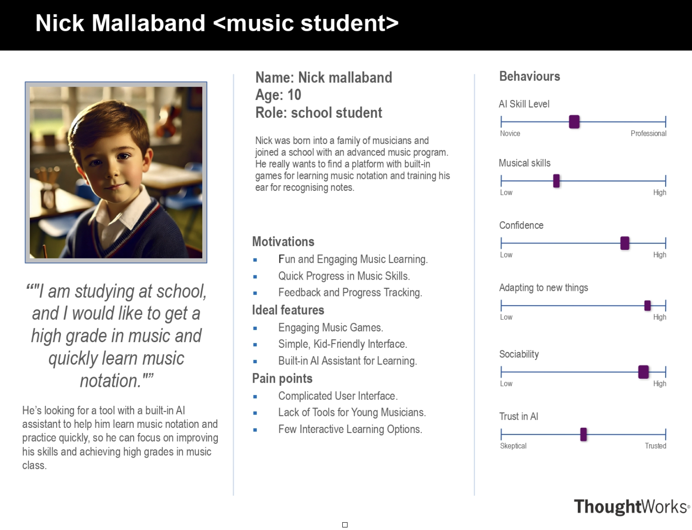
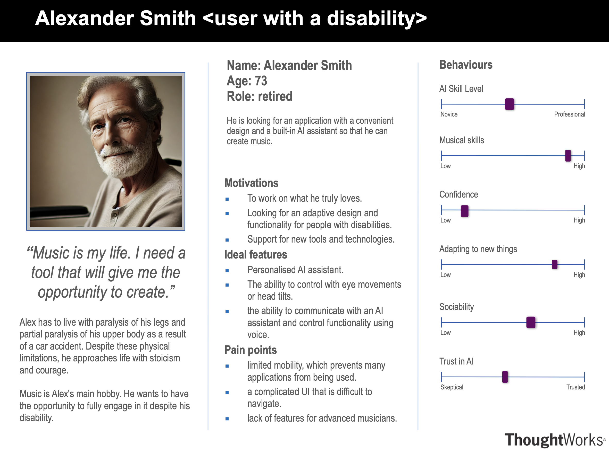
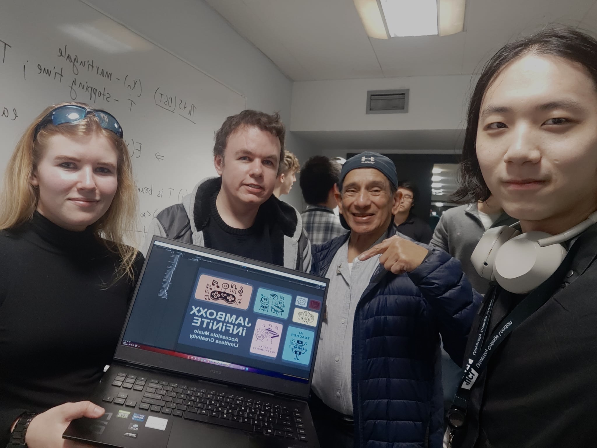
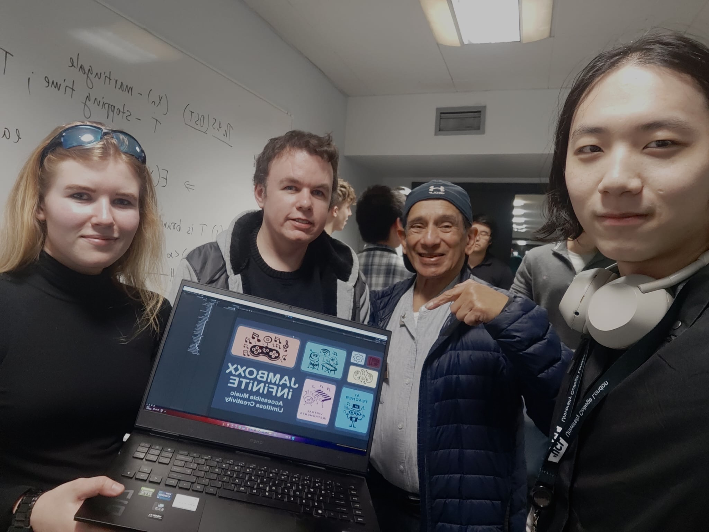

Discovery & Planning: In October we officially launched the project with a Kick-off Meeting with the client, where we discussed goals and key success indicators. We then proceeded with detailed requirement clarification and conducted user research with school children and teachers to understand their musical habits and expectations.
Based on the gathered insights, we finalized the core features and held our first client review session. In parallel, we began preparing an HCI report to document the user interaction aspects. For visualization, we created personas (Persona Photo 1 and Photo 2) representing our future users.
Persona Photo 1:
Persona Photo 2:
 
